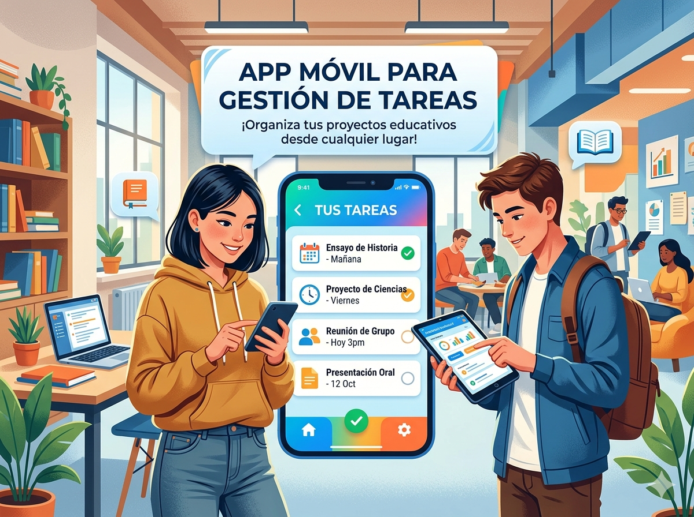
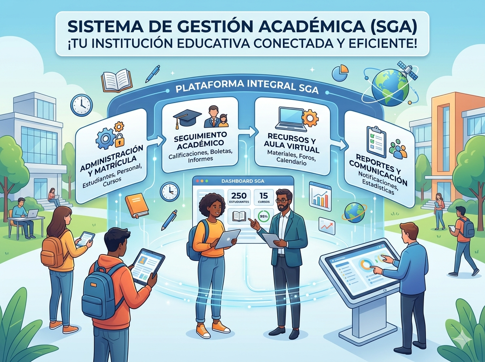
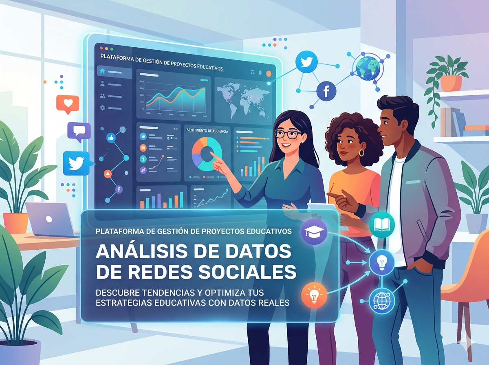
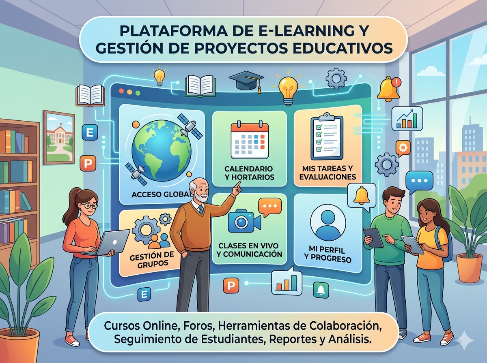
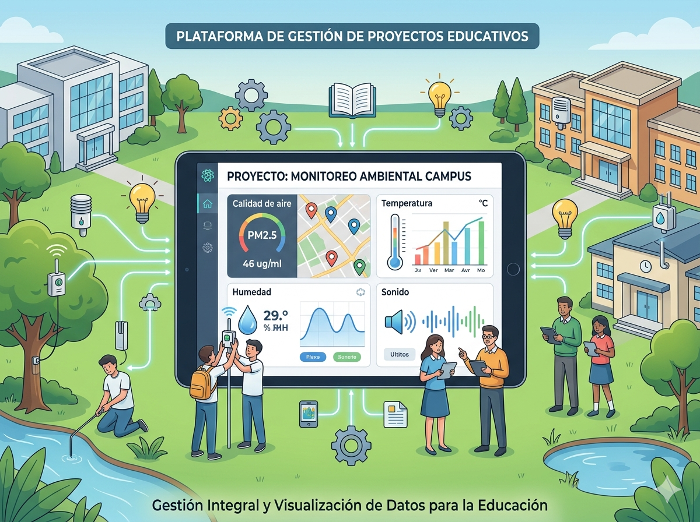

Proyectos Disponibles
App Móvil para Gestión de Tareas

Categoría: Aplicaciones Móviles
Desarrollo de una aplicación móvil multiplataforma que permite a los usuarios crear, organizar y gestionar sus tareas diarias con sincronización en tiempo real.
Estado: En Curso
Ver Detalle
Sistema de Gestión Académica

Categoría: Sistemas
Plataforma web integral para la administración de calificaciones, asistencia y comunicación entre docentes y estudiantes de una institución educativa.
Estado: En Curso
Ver Detalle
Análisis de Datos de Redes Sociales

Categoría: Ciencia de Datos
Proyecto de análisis estadístico y visualización de tendencias en redes sociales usando herramientas de Big Data y Python para identificar patrones de comportamiento.
Estado: Finalizado
Ver Detalle
Plataforma de E-learning

Categoría: Desarrollo Web
Desarrollo de una plataforma educativa online con módulos de cursos, evaluaciones interactivas, foros de discusión y seguimiento del progreso del estudiante.
Estado: Finalizado
Ver Detalle
IoT para Monitoreo Ambiental

Categoría: Sistemas
Sistema de sensores IoT para monitorear variables ambientales en tiempo real, con interfaz web para visualización de datos y alertas automáticas.
Estado: En Curso
Ver Detalle